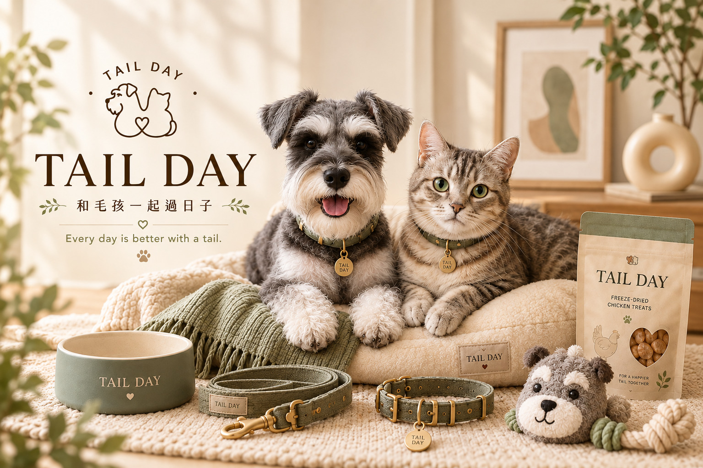

PROJECT 01 / BRANDING
TAIL DAY 寵物品牌設計
以陪伴、日常與溫柔為品牌核心，發想雪納瑞主題的寵物品牌 TAIL DAY。從 LOGO 造型、灰綠色系到品牌調性，練習建立一致又有辨識度的視覺形象。
像整理遊戲冒險紀錄一樣，把每一個創作留下來。這裡收錄寵物品牌、AI 視覺與遊戲影音三種方向，呈現我對風格、畫面與內容的探索。

以陪伴、日常與溫柔為品牌核心，發想雪納瑞主題的寵物品牌 TAIL DAY。從 LOGO 造型、灰綠色系到品牌調性，練習建立一致又有辨識度的視覺形象。

從角色設定、場景氛圍到畫面構圖，運用 AI 輔助探索不同的視覺敘事。喜歡暖色系、可愛又乾淨的畫面，也重視系列作品的風格一致性。

從遊戲實戰內容、節奏剪輯到 YouTube 封面與字幕設計，練習用影像說好一段故事。讓觀看的人能快速掌握重點，也保留有趣的遊戲氛圍。